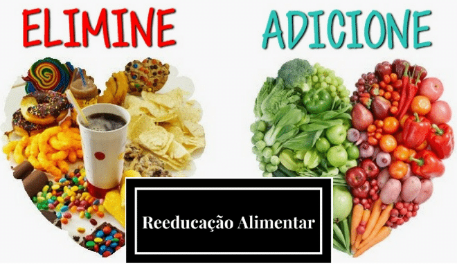
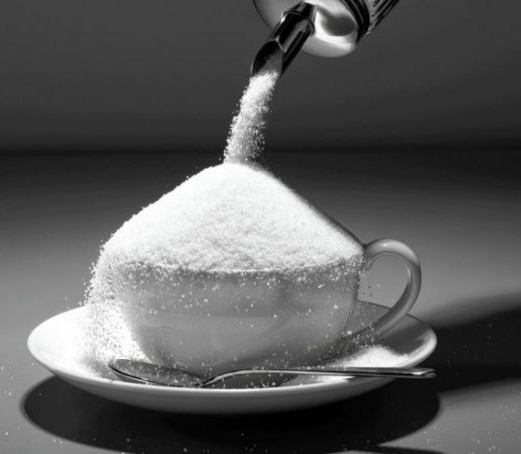
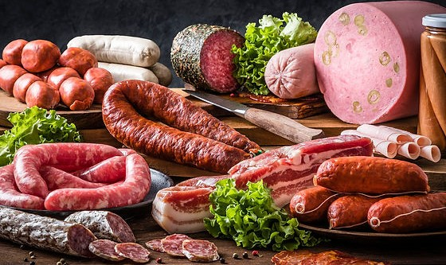
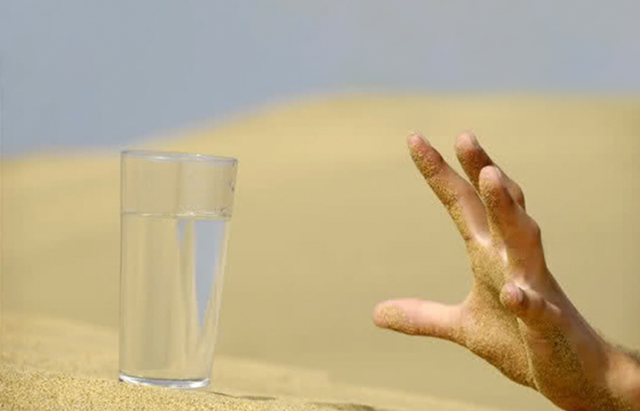
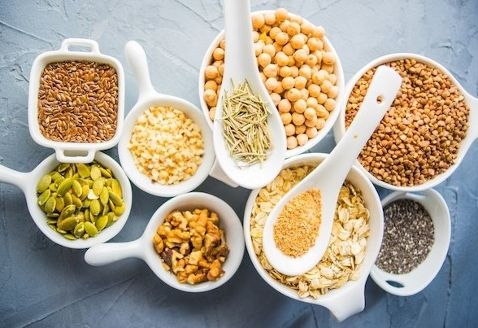
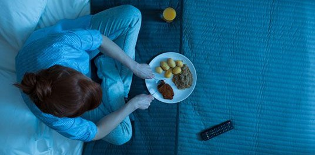
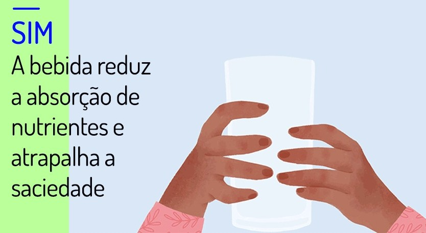

Veja alguns maus hábitos alimentares que você deve parar de fazer para ter uma vida mais saudável

Todo mundo sabe da necessidade de ter bons hábitos alimentares, mas, definitivamente, não é todo mundo que
inclui essas práticas no seu dia. Apesar de serem hábitos que nos elevam ao patamar de bem-estar e qualidade
de vida, tornar essa práticas um hábito não é uma coisa simples.
Agora vamos conhecer os maus hábitos alimentares comuns no nosso cotidiano que devemos abandonar hoje mesmo!
Maus hábitos alimentares
1- Consumo exagerado de açúcar
Açúcares e doces devem ser consumidos com moderação. Eles são compostos quase em sua totalidade por carboidratos simples, que são rapidamente absorvidos pelo organismo. Por essa característica, tendem a alterar bruscamente a glicemia e a liberar grandes quantidades de insulina, acarretando, algumas vezes, em diabetes tipo 2.
2- Comer muitos alimentos processados e embutidos
A Organização Mundial da Saúde (OMS) considera, desde 2015, as carnes processadas como alimentos cancerígenos. As comidas industrializadas – processadas e embutidas – têm em sua composição diversas substâncias químicas desconhecidas pelo nosso organismo. Com isso, elas podem, inclusive, comprometer o sistema imunológico.
3- Beber pouca água
Todo mundo sabe da importância de beber água todos os dias, mas nem todo mundo coloca isso na prática. Ela é essencial para manter nosso organismo em bom funcionamento. Durante um dia, são perdidos aproximadamente dois litros de água pela transpiração, urina, respiração, entre outras atividades. Por isso, deve-se beber em média dois litros diariamente. A escassez da água pode causar fraqueza, cansaço e tontura. Vale lembrar ainda que outros líquidos como chás, sopas e sucos entram na conta dos dois litros de água necessários por dia. Inclusive, já escrevemos sobre isso na publicação “Posso substituir água por suco?”
4- Consumo de poucas fibras
A falta de fibras também é um mau hábito comum, dado que elas são responsáveis por diminuir a absorção de gorduras, açúcares e colesterol. As fibras também ajudam muito na sensação de saciedade. Por isso, nada de deixá-las de fora do prato, combinado?
5- Comer antes de dormir
Comer antes de dormir estimula a produção de hormônios, podendo alterar o ritmo diário do organismo e causar aumento de peso. Outro problema comum de ingerir alimentos muito tarde é o refluxo, que causa náusea, indigestão e pode inclusive ajudar no desenvolvimento de câncer de esôfago.
6– Ingerir líquidos durante as refeições
Ingerir líquidos durante a alimentação pode fazer com que a comida não seja bem mastigada, atrapalhando o processo digestivo. O ideal é que as bebidas sejam consumidas 30 minutos antes ou 60 minutos depois das principais refeições. Além disso, beber enquanto come influencia no controle da fome, comprometendo a sensação de saciedade. Isso porque ingerir líquidos durante a alimentação pode distender a parede do estômago, dando a impressão de que ele está vazio e precisa de mais comida.
